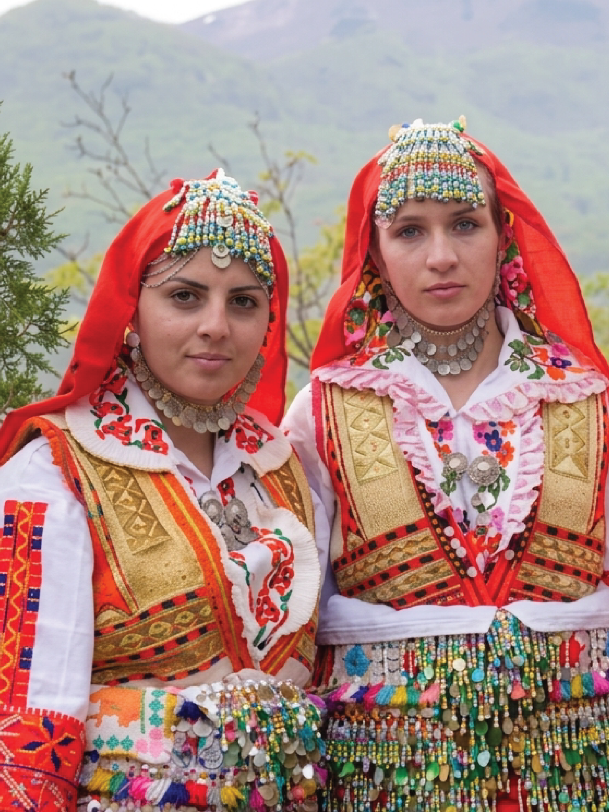

Lazarki is a group-based ritual practice associated with the calendrical cycle surrounding Lazarus Saturday and Palm Sunday. In its documented forms, girls and young women move through villages singing blessing songs, performing prescribed movements and dances, wearing ceremonial clothing, carrying ritual objects and receiving gifts from households they visit.
The objects used vary by locality and period and may include baskets, willow branches, staffs, umbrellas, hats and, in older descriptions, weapons.
Lazarki is not a single standardized custom. It is better understood as a family of localized ritual forms. Struga, Drimkol, Radoviš, Prespa, Dolni Polog, Kozjak, Kriva Palanka and other areas preserve different combinations of participants, costumes, songs, dances, props, ritual days and internal roles.
The common structure is more stable: a female or predominantly female group enters ordinary village space, addresses people and households through song, performs prescribed movement, confers blessing, receives gifts and continues to the next household.
1. Injevo: The Willow
The 2024 fieldwork in Injevo, Radoviš, documents an active Lazarki practice directly rather than reconstructing it primarily from historical accounts or memory. The custom extends across two days.
Saturday: willow and monastery
The girls first go to a willow tree near a monastery. They select living branches and sing while gathering them, then return toward the monastery in procession carrying the branches.
At the chapel entrance, each Lazarka attaches willow to the doorway. Villagers interviewed during the research could no longer explain why this was done; they knew that earlier generations had performed the gesture and continued it.
Within the monastery complex, the girls sing in structured formations and place willow near or before the icon of the patron saint. The circuit continues through several religious sites, including monasteries dedicated to the Virgin Mary, St Michael the Archangel, St Spas and St Demeter, with the visits completed before sunset.
Sunday: households
On Sunday, the girls divide into smaller groups and move through the settlement. Household members receive appropriate songs, while gifts—including money—are collected.
In Injevo, these are later combined with ritual bread or pogača and redistributed among the performers.
The documented sequence connects:
tree branch → monastery → icon → village → household → gift → redistribution
It is one of the clearest contemporary examples of Lazarki moving between natural, religious and domestic spaces.
Willow
Willow has more than one documented context.
In Slavic Orthodox practice, willow substitutes for palm on Palm Sunday because it is locally available and buds early in spring. At the same time, Macedonian ethnographic interpretations have connected willow gathering with vegetation, fertility and seasonal regeneration.
These interpretations should not be collapsed into one explanation.
What can be documented is that willow belongs to the spring cycle, is ritually gathered and carried, enters religious and domestic ritual spaces and has an established Orthodox Palm Sunday association.
What cannot currently be demonstrated is that the Injevo willow practice is an unchanged survival of a named pre-Christian Macedonian religion, or that the branch placed on the chapel door retains a recoverable ancient meaning.
The Injevo participants themselves did not know the reason for that particular act.
The distinction is important: the gesture survives even where its local explanation has not.
2. The Household
The household is one of the central spaces of Lazarki.
Preparations traditionally begin several days before the procession. Historical descriptions most often record groups of approximately four to eight girls, although the age and composition of groups vary by locality and period.
Girls learned songs from older women, prepared baskets and other objects and wore clothing that was exceptionally clean and festive. A commonly reported historical age range is approximately 12–17, but younger children and older unmarried women also appear in regional accounts.
The procession generally began in the morning.
The repertoire was not a single generic song repeated at every house. Songs could be selected according to the person or circumstances being addressed: an unmarried young man, bride, mother, child, elderly person, absent household member or prosperous house, as well as crops, livestock and other aspects of village life.
Households could request particular songs for individual members.
The nineteenth-century record is particularly important here. In the Miladinov brothers’ 1861 collection, Lazar songs from the Struga area are categorized according to their addressee, including songs for a small child, unmarried man, bride, woman with sons, childless woman whose husband is away, wealthy man and old man.
The accompanying description records girls gathering by neighbourhood, selecting one girl as a ceremonial nevesta, and singing differently according to the age and status of the person encountered.
The household therefore does not receive an anonymous blessing. Its members are individually recognized through a repertoire adapted to their social position.
Blessing and reciprocity
The performance is followed by an exchange.
Historical sources record gifts including food, eggs, cloth, clothing and money. Contemporary groups may collect money alongside eggs or food. These gifts were traditionally divided among the performers; in contemporary Injevo, money is still pooled and redistributed.
The exchange is therefore better understood as ritual reciprocity than as payment for entertainment: the household receives blessing and social recognition, while the performers receive material acknowledgment.
The ritual also has limits. Historical accounts describe Lazarki avoiding houses where a recent death had occurred.
In contemporary Injevo, mourning still affects whether a household receives the ritual, although the length of mourning is now determined by the family.
The household threshold
The doorway is one of the ritual’s recurring spaces.
The Lazarki arrive.
A welcoming song marks entry.
The household identifies who should be addressed.
Dance may take place in the courtyard.
Gifts are received.
A farewell song marks departure.
The group continues to the next house.
The ritual therefore repeatedly converts private domestic spaces into temporary ceremonial spaces.
In Injevo, this domestic network is preceded by a network of monasteries and religious sites.
3. Song, Movement And Role
Song is one of the central media of Lazarki.
Within the ritual framework, the singers are not merely describing a blessing: the performance of the song constitutes the blessing.
Macedonian ritual dance-songs have been described as collective forms in which melody, rhythm and choreographic movement function together. Lazar songs are strongly associated with antiphonal or responsorial performance.
Reported metres include 2/4 and 7/8. Depending on locality, one group may begin and another repeat, or singers may alternate in pairs or smaller groups.
Veličkovska’s study of northeastern traditions distinguishes functional categories including:
These categories demonstrate that the repertoire is connected to physical movement and spatial conditions. The music changes with what the performers are doing.
Roles within the group
The usual participant is an unmarried girl.
The leading performer has different names according to locality, including tančarka, nevesta/nesta, matica, prednjica, navrhnica and zaveljvač. She may be the oldest or most accomplished participant and can speak or ceremonially greet the household on behalf of the group.
Other systems distinguish prednjici or čelnici from srednjici and other positions. Vevčani records include the terms buljubaša, zavelvač and concluding singer.
The organization can also include explicitly gendered roles.
Maški Lazar and Ženski Lazar—Male and Female Lazar—are documented in some traditions.
Masculine attributes may include a staff, hat, umbrella, sword or weapon. Historical descriptions from Kozjak record a girl in male clothing carrying a yatagan or knife at the front of the procession.
The evidence does not establish a single explanation for the origin of these roles.
Movement
The documented movement vocabulary includes walking, braided steps, stamping, turns, jumps, interlacing or serpentine movement and alternating lines.
The result is not a single national choreography. It is a collection of regional choreographic systems.
Struga
The Struga region has some of the strongest documentation of the relationship between song and dance.
Mihajlo Dimovski’s 1973 study records dance-songs including:
In Tašmaruništa, Petar Avramovski records a specific relationship between song, kinship and dance: after “Kito Mito Nevesto,” the girls begin an oro, and the person who leads the dance should be a girl related to the household receiving the blessing.
The same tradition could also carry a life-stage meaning. In the Struga area, a girl approaching marriage could occupy the final position in the chain, with the performance understood as the last time she would dance that particular ritual dance as an unmarried girl.
The movement described for Brala moma zelenika is a calm open-circle dance moving to the right, without leaps.
4. Dress, Status And Gender
Lazarki clothing is closely associated with bridal dress and adult female status.
Historical participants could wear garments or ornaments normally associated with brides, sometimes for the first time. Petkovski interprets this as an initiatory dimension: the girl temporarily assumes the visual vocabulary of the marriageable or married woman.
An older maxim cited in the literature held that it was shameful for a Lazarka to sing in old clothing. Newness, cleanliness and completeness were important, although the specific distinction from everyday clothing varied by locality.
There is no single Lazarki costume.
In the Struga area, documented and reconstructed examples include white shirts, woven aprons, waistcoats or bodices, headcloths, necklaces and substantial displays of coins or metal ornaments. Baskets may be decorated with flowers or spring greenery.
One Struga-region description lists a klašenik, shirt, belt, woven apron or bovča, headscarf and jewellery including head ornaments, earrings and chains bearing coins. Aprons could be vertically striped and decorated with coloured pompoms, metallic sequins and lace.
In northeastern areas, some historical costumes approached bridal dress while being distinguished by particular headwear and props.
In Sredorek, Žegligovo and Slavište, descriptions include the knitted kapa šehirlika, while umbrellas were carried specifically by the first two girls.
In Prespa, the leading Lazarka could carry a willow staff and use it to knock on household doors.
Injevo
The 2024 fieldwork in Injevo provides detailed contemporary evidence:
One participant wore an elaborate beaded necklace resembling a snake.
Informants reported that family matriarchs had once commissioned and passed down costumes, and that embroidery had previously communicated marital status more strictly than it does today.
Costume consequently operates not simply as decoration but as part of the ritual’s system of status, age and gender.

Maidenhood and courtship
Historical scholarship frequently uses the language of initiation, particularly where girls wear bridal attributes or perform a ritual dance for the final time before marriage.
The evidence supports understanding Lazarki as connected to a transition in life stage, but it is not necessary to impose a rigid three-stage initiation model on every regional form.
What is clear is that the ritual publicly distinguishes the participating girls from childhood. They move independently through village space, address household heads, handle gifts and money, perform inherited repertoire and wear garments associated with adult female status.
Courtship is also present in the song corpus. Young men, girls, flowers, bridal imagery and hoped-for marriages recur throughout the repertoire.
The girls are publicly visible, some wear bridal attributes, and particular songs identify unmarried men and women. Yet these elements operate within a sanctioned religious-seasonal procession rather than a straightforward courtship event.
5. A Regional System
Lazarki cannot be described adequately through a single national model.
The Struga region appears particularly rich in documentation, with evidence extending from the nineteenth century through twentieth-century ethnography and contemporary reporting. Even within Struško and Debarski Drimkol, practices differ.
Some are associated with Lazarus Saturday; in Struga, related performances can extend into Palm Sunday. Some villages preserve separate male and female forms.
Struga and Drimkol
In Ložani, contemporary documentation describes Na konak, in which Lazarki spend the night before the feast in a newly built house. If a younger participant falls asleep, older girls may mischievously sew part of her clothing to the bedding.
In Vevčani, the women’s Lazarus custom disappeared around the 1950s and was revived in 2016 by KUD Drimkol. Current participants gather at St Nicholas, sing the Lazarus troparion, decorate baskets, perform a Lazarus oro in the centre and divide into groups visiting upper and lower neighbourhoods.
Vevčani also preserves or has revived a Maška Lazara tradition involving boys.
In Struga proper, modern summaries describe connected activities across three days:
Ohrid–Struga
Veličkovska’s territorial study identifies strong integration of ritual singing and dancing in the Ohrid–Struga lowland villages, including:
Jankoec, Leskoec, Velgošti, Mešeišta, Trebeništa, Kosel, Livoišta, Volino, Moroišta, Ložani, Draslajca, Labuništa, Misleševo, Radožda, Vraništa, Vevčani and Modrič.
Northeast
In Kozjak and Kriva Palanka, accounts describe more strongly differentiated roles, masculine disguise, groups crossing between one another, umbrellas and weapons, as well as songs categorized by whether performers walk, stand or turn and dance.
In Radoviš, Vijena Loza Vijena was performed three times in front of a household. Informants also remembered an oro following the songs with gajda and tapan accompaniment.
In Prespa, the leading Lazarka could carry a willow staff.
In Kozjak, historical descriptions record masculine dress and weapons.
In Kriva Palanka / Slavište, documentation includes Male and Female Lazar, umbrellas and distinct walking, standing and turning song types.
Dolni Polog
In Dolni Polog, the available contemporary material comes from a filmed reconstruction rather than uninterrupted ritual practice.
The project combined literature and field research with costume selection, scripting, rehearsal and filming.
These distinctions are essential.
There is no single documented “Lazarki dance” or universal costume.
There are regional systems within a broader ritual category.
Regional record
| Region / locality | Documented feature | Evidence |
|---|---|---|
| Struga | Neighbourhood groups, ceremonial bride, person-specific songs, nineteenth-century record | Strong; documented from 1861 onward |
| Tašmaruništa | “Kito Mito Nevesto”; oro led by a girl related to the household | Strong twentieth-century ethnographic documentation |
| Ohrid–Struga field | Strong integration of ritual singing and dance | Strong regional ethnomusicological record |
| Ložani | Na konak overnight custom | Contemporary local documentation |
| Vevčani | Church gathering, baskets, neighbourhood groups, revival from 2016; Male Lazar tradition | Contemporary revival evidence |
| Drimkol | Female and male Lazar forms in some villages | Contemporary continuity/revival evidence |
| Injevo, Radoviš | Two-day willow, monastery and household sequence | Strong contemporary fieldwork |
| Radoviš area | “Vijena Loza Vijena”; repeated dance; remembered gajda/tapan | Older fieldwork |
| Prespa | Willow staff carried by leading Lazarka | Older ethnographic documentation |
| Kozjak | Girl in masculine ritual dress; weapons in older descriptions | Strong but historical |
| Kriva Palanka / Slavište | Male/Female Lazar, umbrella; walking, standing and turning song types | Strong ethnomusicological evidence |
| Dolni Polog | Filmed reconstruction based on field and literature research | Reconstruction, not uninterrupted ritual |
The regional evidence is strongest for Struga/Struško and Injevo, reasonably strong for northeastern regions and thinner for some other Macedonian areas.
The available research does not yet support a complete village-by-village map of Lazarki across Macedonia.